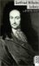

Gottfried Wilhelm Leibniz
1.7.1646 - 14.11.1716
Leibniz habe viele Leben gelebt - als Diplomat, Historiker, Philosoph und auch Mathematiker. Griechisch und Latein erlernte der junge Leibniz autodidaktisch und das humanistische Studium befriedigte ihn nicht mehr - und so wandte er sich der Logik zu.
Aus den Versuchen die klassische Logik zu reformieren entwickelten sich die ersten Ansätze zu seiner 'Characteristica Universalis'. Mit dieser Idee war Leibniz seiner Zeit in Bezug auf Logik und Mathematik um zwei Jahrhunderte voraus und stand damals mit diesem Traum allein. Russell und Whitehead griffen erst 1910 mit Ihrer 'Principia Mathematica' die Entwicklung der symbolischen Logik wieder auf.
Leibniz verband in sich die beiden gegensätzlichen Gebiete der Mathematik, das kontinuierliche und diskrete. Er schuf für die Mathematik die Infinitesimalrechnung und die Kombinatorik. Leibniz war vielseitiger als Newton, der unbeirrbar nur ein einziges Ziel kannte - die Anwendung mathematischen Denkens auf die Erscheinungen des physikalischen Universums.
Leibniz sagte noch im 17.Jahrhundert über √-1 = i :
... der Heilige Geist fand einen erhabenen Ausweg in der Analysis mit diesem Mittelding zwischen Sein und Nichtsein,
das wir als imaginäre (Quadrat)wurzel der negativen Einheit bezeichnen.
Leibniz führte den · als Multiplikationszeichen und : als Divisionszeichen ein. Leibniz leistete auch auf den Gebieten der Rechtswissenschaft, Theologie, Politik, Geschichte, Literatur, Logik, Metaphysik und Philosophie überragendes. Leibniz wurde auch einer der ersten ausländischen Mitglieder der französischen Akademie der Wissenschaften.
Seine letzten Lebensjahre wurden vom Prioritätsstreit mit Isaac Newton um die Erfindung der Differential- und Integralrechnung überschattet.


Gottfried W. Leibniz
R. Finster,
G. van den Heuvel